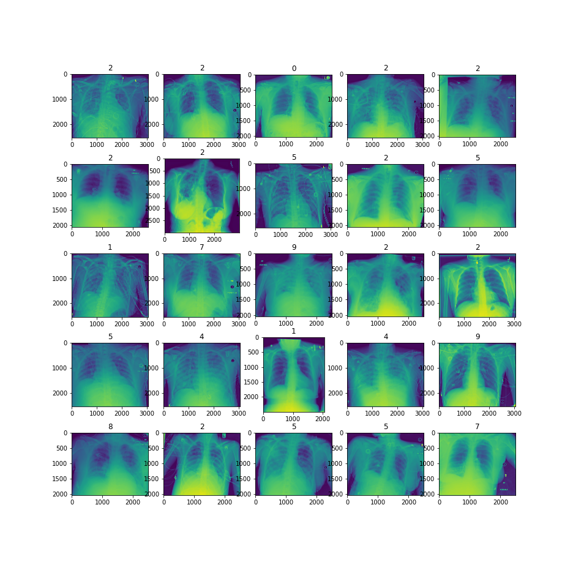

biodatasets Module¶
biodatasets module provides classes to load public biomedical datasets
in a PyTorch friendly manner.
ChestXrayDataset class¶
- class farabio.data.biodatasets.ChestXrayDataset(root: str = '.', download: bool = False, mode: str = 'train', shape: int = 256, transform: Optional[Callable] = None, target_transform: Optional[Callable] = None, show: bool = True)[source]¶
PyTorch friendly ChestXrayDataset class
Dataset is loaded using Kaggle API. For further information on raw dataset and pneumonia detection, please refer to [1].
References
Examples
>>> valid_dataset = ChestXrayDataset(root=_path, download=True, mode="val", show=True)

DSB18Dataset class¶
- class farabio.data.biodatasets.DSB18Dataset(root: str = '.', download: bool = False, mode: str = 'train', shape: int = 512, transform: Optional[Callable] = None, target_transform: Optional[Callable] = None, show: bool = True)[source]¶
PyTorch friendly DSB18Dataset class
Dataset is loaded using Kaggle API. For further information on raw dataset and nuclei segmentation, please refer to [1].
References
Examples
>>> train_dataset = DSB18Dataset(_path, transform=None, download=False, show=True)

HistocancerDataset class¶
- class farabio.data.biodatasets.HistocancerDataset(root: str = '.', mode: str = 'train', transform: Optional[Callable] = None, target_transform: Optional[Callable] = None, download: bool = False, show: bool = True)[source]¶
PyTorch friendly HistocancerDataset class
Dataset is loaded using Kaggle API. For further information on raw dataset and tumor classification, please refer to [1].
References
Examples
>>> train_dataset = HistocancerDataset(root=".", download=False, mode="train")

RANZCRDataset class¶
- class farabio.data.biodatasets.RANZCRDataset(root: str = '.', mode: str = 'train', shape: int = 256, transform: Optional[Callable] = None, target_transform: Optional[Callable] = None, download: bool = False, show: bool = True)[source]¶
PyTorch friendly RANZCRDataset class
Dataset is loaded using Kaggle API. For further information on raw dataset and catheters presence, please refer to [1].
References
Examples
>>> train_dataset = RANZCRDataset(_path_ranzcr, show=True, shape=512)
{kind=link}
RetinopathyDataset class¶
- class farabio.data.biodatasets.RetinopathyDataset(root: str = '.', mode: str = 'train', shape: int = 256, transform: Optional[Callable] = None, target_transform: Optional[Callable] = None, download: bool = False, show: bool = True)[source]¶
PyTorch friendly RetinopathyDataset class
Dataset is loaded using Kaggle API. For further information on raw dataset and blindness detection, please refer to [1].
References
Examples
>>> train_dataset = RetinopathyDataset(".", mode="train", show=True)